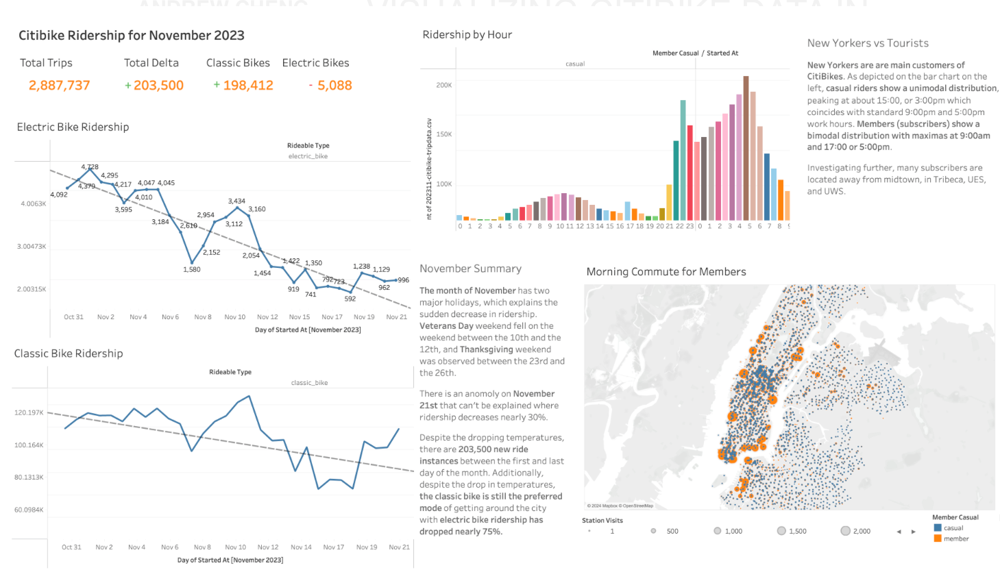

Overview
An interactive Tableau dashboard visualizing NYC Citi Bike ridership patterns for November, exploring trip frequency, station activity, and usage trends across the five boroughs.
Dashboard
Interactive Visualization
The dashboard visualizes Citi Bike trip data for November, surfacing patterns in ridership volume, popular start and end stations, trip duration distributions, and rider demographics. Filters allow exploration by user type, station, and time of day.

Outcomes
Results
1
Interactive Dashboard
PUBLIC
Published on Tableau
NOV
Ridership Dataset